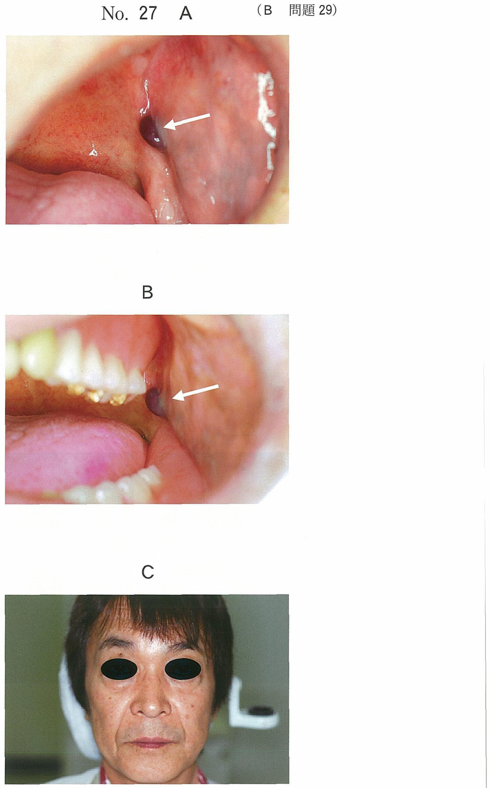
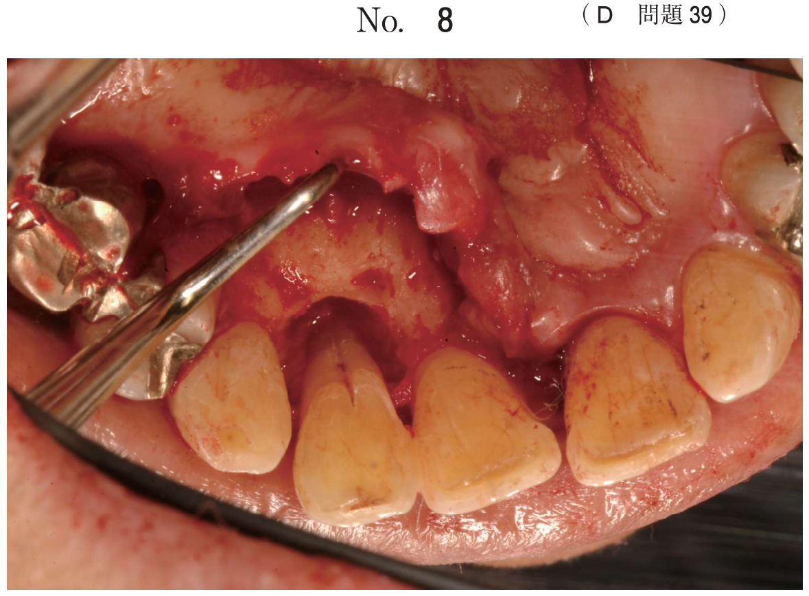
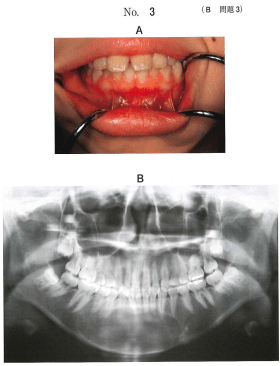

顎骨嚢胞（非歯原性）
非歯原性嚢胞の分類
顎骨に発生する嚢胞のうち、歯の形成組織（エナメル器、歯堤など）に由来しないものを非歯原性嚢胞という。顔面の発生過程における上皮遺残に由来する発育性嚢胞と、手術に起因する術後性嚢胞がある。
顎骨に生じる非歯原性嚢胞
| 嚢胞 | 発生部位 | 由来 |
|---|---|---|
| 術後性上顎嚢胞 | 上顎洞 | 上顎洞根治術後の残存上皮 |
| 鼻口蓋管嚢胞 | 上顎正中（切歯管） | 鼻口蓋管の残存上皮 |
| 球状上顎嚢胞 | 上顎側切歯〜犬歯間 | 議論あり（歯原性の可能性も） |
- 術後性上顎嚢胞 → 顎骨（上顎洞）に生じる非歯原性嚢胞 ○
- 歯肉嚢胞 → 歯原性（歯堤由来）×
- 鼻歯槽嚢胞 → 軟組織に発生（顎骨ではない）×
- 含歯性嚢胞 → 歯原性 ×
- 甲状舌管嚢胞 → 頸部に発生（顎骨ではない）×
術後性上顎嚢胞
術後性上顎嚢胞（postoperative maxillary cyst）は、副鼻腔炎（蓄膿症）の根治手術後、数年〜十数年後に上顎洞に発生する嚢胞である。国試で最も出題頻度が高い非歯原性嚢胞。
発生機序
本嚢胞の発生機序として以下の3つが考えられている。
- 根治術の際の残留粘膜（上顎洞粘膜・鼻粘膜）が嚢胞化（最も重要）
- 術後の出血からの分泌物が貯留して嚢胞化（粘膜嚢胞＝貯留嚢胞）
- 再生上顎洞の自然孔が閉鎖し、対孔の閉鎖により嚢胞が発生
臨床所見
- 好発年齢：30歳代。女性がやや多い
- 根治術から10〜20年後に発症することが多い
- 症状：頬部の腫脹・鈍痛、上顎歯肉頬移行部の腫脹、歯痛や歯の違和感
- 歯肉頬移行部に手術瘢痕（線状の瘢痕）を認めることが診断の手がかり
- 眼球突出、鼻閉、複視などの眼症状を伴うこともある
診断
- 問診：上顎洞根治術の既往 + 歯肉頬移行部の手術瘢痕の有無
- エックス線・CT：上顎洞内の嚢胞状陰影
- 病理：嚢胞壁は線毛円柱上皮、立方上皮、扁平上皮が混在。腺組織も認められることがある
- 鑑別：歯根嚢胞、上顎洞癌
治療
炎症がある場合は術前に抗菌薬投与。根治手術としてCaldwell-Luc法により嚢胞摘出術を行う。術中に内容が正常な解剖学的形態を呈していないことに注意する。
鼻口蓋管嚢胞（切歯管嚢胞）
鼻口蓋管嚢胞は非歯原性の発育性嚢胞で、鼻口蓋管（切歯管）内の残存上皮に由来する。口腔側に近い場合は切歯管嚢胞（incisive canal cyst）、口蓋側の粘下にできた場合は蓋乳頭嚢胞（cyst of papilla palatina）とよばれる。
- 発生頻度：嚢胞性疾患の5%以下
- エックス線像：上顎前歯部正中にハート型の透過像
- 大きさ：ほぼ1 cm内外
- 鑑別：周囲の歯は生活歯（正中嚢胞との区別、歯根嚢胞との鑑別に重要）
- 病理：重層扁平上皮で裏装。杯細胞（goblet cell）が介在し粘液を分泌
球状上顎嚢胞
球状上顎嚢胞（globulomaxillary cyst）は上顎側切歯と犬歯の間の骨内にみられ、いわゆる裂隙嚢胞として知られる。歯原性か非歯原性かの議論があり、現在は歯原性嚢胞由来の可能性も指摘されている。
鼻歯槽嚢胞
鼻歯槽嚢胞（nasoalveolar cyst）は鼻翼付近の軟組織に発生する嚢胞で、Klestadt嚢胞ともよばれる。顎骨内には発生しないため、顎骨の膨隆は生じない。
嚢胞様病変（偽嚢胞）
上皮裏装を持たない嚢胞様の骨空洞を偽嚢胞という。
単純性骨嚢胞
単純性骨嚢胞（simple bone cyst）は外傷性骨嚢胞、出血性骨嚢胞ともよばれる。骨内血腫の器質化・液化により嚢胞が形成されると考えられている。
- 好発：若年男性、下顎体部に多い
- 無症状で偶然発見されることが多い
- 周囲の歯は生活歯で動揺なし、歯根吸収もなし
- エックス線像：境界がやや不明瞭な透過像。scalloping状の波状辺縁を示すことがある
- 病理：上皮裏装がない。嚢胞壁は多数の毛細血管を含む結合組織
- 治療：開窓して掻爬。予後良好で再発は少ない
静止性骨空洞
静止性骨空洞（static bone cavity）は下顎角部の舌側に認められる骨欠損で、顎下腺の圧迫によるもの。嚢胞ではなく治療不要。エックス線写真の検査で0.1〜0.9%の割合で偶然発見される。
過去問で実力チェック
顎骨に生じる非歯原性嚢胞はどれか。1つ選べ。
b 鼻歯槽嚢胞
c 含歯性嚢胞
d 甲状舌管嚢胞
e 術後性上顎嚢胞
【解説】術後性上顎嚢胞は上顎洞根治術後に顎骨（上顎洞）内に発生する非歯原性嚢胞である。歯肉嚢胞・含歯性嚢胞は歯原性。鼻歯槽嚢胞は軟組織に発生（顎骨ではない）。甲状舌管嚢胞は頸部に発生する。
36歳の男性。上顎右側歯肉頰移行部の腫脹と疼痛とを主訴として来院した。6か月前から同部の腫脹が出現し持続している。20年前に蓄膿症の手術を受けているという。初診時のエックス線写真（別冊No.33A）とCT（別冊No.33B、C）とを別に示す。
考えられる病態はどれか。1つ選べ。


b 粘液貯留嚢胞の感染
c 鼻炎による自然孔の閉鎖
d 頬脂肪体の上顎洞への侵入
e 悪性腫瘍による上顎洞壁の破壊
【解説】20年前の蓄膿症手術（上顎洞根治術）の既往が最大のポイント。術後性上顎嚢胞の発生機序として最も重要なのは、根治術の際に残された上顎洞粘膜や鼻粘膜の残存上皮が嚢胞化することである。
58歳の女性。上顎左側臼歯部の腫脹と鈍痛を主訴として来院した。1年前から自覚し、徐々に増大しているという。同部の歯肉頬移行部に線状の瘢痕を認める。初診時の口腔内写真（別冊No.14A）、エックス線画像（別冊No.14B）、CT（別冊No.14C）、穿刺吸引時の内容液の写真（別冊No.14D）及び生検時のH-E染色病理組織像（別冊No.14E）を別に示す。
診断名はどれか。1つ選べ。



b 上顎洞癌
c 歯性上顎洞炎
d 術後性上顎嚢胞
e 上顎洞粘液貯留嚢胞
【解説】歯肉頬移行部の線状瘢痕は上顎洞根治術（Caldwell-Luc法）の手術痕であり、術後性上顎嚢胞を強く示唆する。上顎洞に嚢胞状病変がみられ、内容液は粘稠性の液体で、病理組織学的には線毛円柱上皮や扁平上皮が混在する。
20歳の女性。下顎正中部の精査を希望して来院した。1週前に同部の無痛性のエックス線透過像を指摘されたという。下顎右側第二小臼歯〜下顎左側第二小臼歯には動揺はなく、歯髄電気診では生活反応があった。生検時には唇側の骨を含めて検体を採取した。初診時の口腔内写真（別冊No.3A）、エックス線写真（別冊No.3B）、CT （別冊No.3C）、MRI T2強調像（別冊No.3D）及び生検時のH−E染色病理組織像（別冊No.3E）を別に示す。
診断名はどれか。1つ選べ。

b 単純性骨嚢胞
c エナメル上皮腫
d 角化嚢胞性歯原性腫瘍
e 石灰化嚢胞性歯原性腫瘍
【解説】若年者、下顎正中部の無痛性透過像、周囲歯は生活歯で動揺なし、という所見から単純性骨嚢胞を疑う。病理組織学的に上皮裏装がないことが確定診断の根拠となる。静止性骨空洞は下顎角部舌側に発生し、下顎正中部には発生しない。